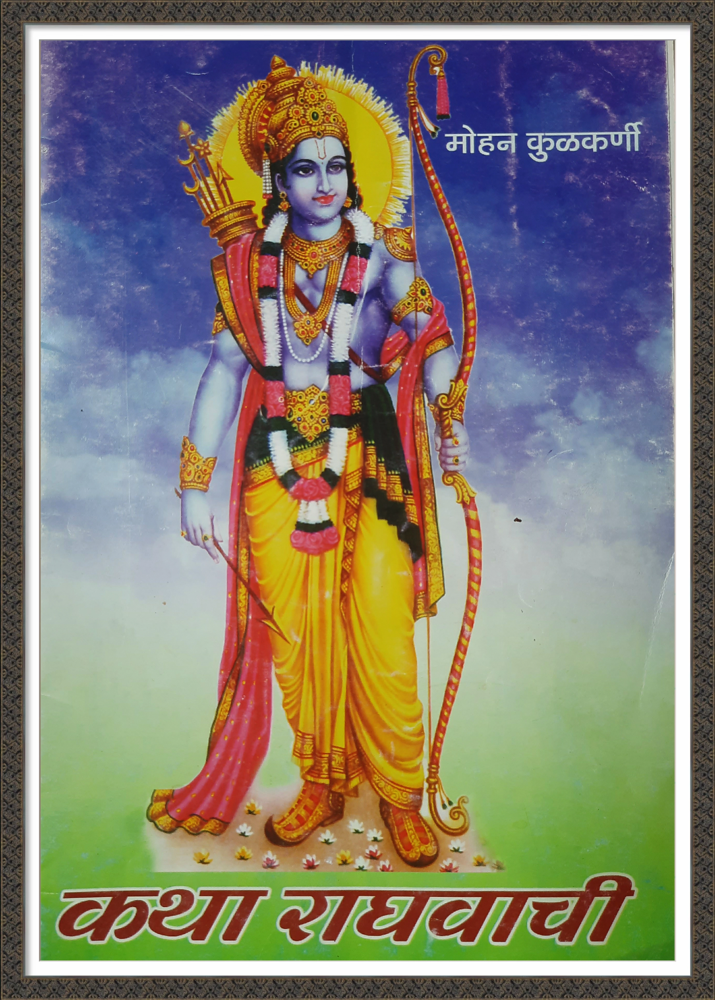

कथा राघवाची

रामकथेची मोहिनी
राम अगोदर की रामायण ?
वाल्मीकिंना स्फुरले काव्य...
अहल्या शिळा राघवे मुक्त केली
अहल्योध्दार
सीता स्वयंवर
सीतात्याग
शम्बुक आणि राम
राम म्हणता रामचि होई
लेखक परिचय
🏠 मुख्य पान